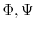

This makes restraints enforcing an extended-strand conformation for the residue segment specified by residues (which can be created using the model.residue_range() function). This is achieved by applying  binormal restraints only. These binormal restraints force the mainchain conformation into class ``B'', except for the Pro residues which are restrained to class ``P'' [Šali & Blundell, 1993].
In many cases (e.g., most comparative modeling runs) you will already have binormal restraints active (which will conflict with strand restraints), so it is recommended that you first use Restraints.unpick() followed by Restraints.condense() to remove these.
To actually add the restraints, pass the new object to Restraints.add(). See Section 2.2.10 for an example.